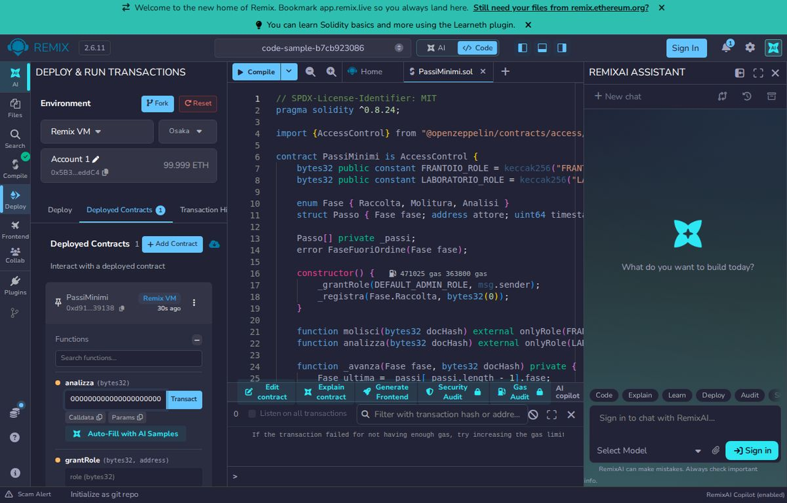

6. Who can do what
Like the keys of a building: the doorkeeper has the entrance key, the plumber the one for the technical rooms. Nobody can open a door that is not theirs.
OpenZeppelin's AccessControl manages roles: a role is a name (computed with keccak256) plus a list of addresses holding it. The onlyRole modifier blocks anyone without it. In the Pietre di Vita registry the roles are PRODUTTORE_ROLE, FRANTOIO_ROLE, LABORATORIO_ROLE and IMBOTTIGLIATORE_ROLE; here we use two.
// SPDX-License-Identifier: MIT
pragma solidity ^0.8.24;
import {AccessControl} from "@openzeppelin/contracts/access/AccessControl.sol";
contract PassiMinimi is AccessControl {
bytes32 public constant FRANTOIO_ROLE = keccak256("FRANTOIO_ROLE");
bytes32 public constant LABORATORIO_ROLE = keccak256("LABORATORIO_ROLE");
enum Fase { Raccolta, Molitura, Analisi }
struct Passo { Fase fase; address attore; uint64 timestamp; bytes32 docHash; }
Passo[] private _passi;
error FaseFuoriOrdine(Fase fase);
constructor() {
_grantRole(DEFAULT_ADMIN_ROLE, msg.sender);
_registra(Fase.Raccolta, bytes32(0));
}
function molisci(bytes32 docHash) external onlyRole(FRANTOIO_ROLE) { _avanza(Fase.Molitura, docHash); }
function analizza(bytes32 docHash) external onlyRole(LABORATORIO_ROLE) { _avanza(Fase.Analisi, docHash); }
function _avanza(Fase fase, bytes32 docHash) private {
Fase ultima = _passi[_passi.length - 1].fase;
if (uint8(fase) != uint8(ultima) + 1) revert FaseFuoriOrdine(fase);
_registra(fase, docHash);
}
function _registra(Fase fase, bytes32 docHash) private {
_passi.push(Passo(fase, msg.sender, uint64(block.timestamp), docHash));
}
}Line by line
- The two constants are the role names;
keccak256turns them into a fixed number. Passois one row of the register: phase, who wrote it, when, document fingerprint._passiis the list of steps, append-only;errordefines the message used when the order is wrong.- The constructor assigns the admin (who grants and removes roles) and records Raccolta as the first step.
molisciandanalizzacan only be called by the right role (onlyRole)._avanzareads the last recorded phase: the new one must be exactly the next, otherwiserevertcancels everything._registraadds the step with its signer (msg.sender) and time (block.timestamp).
The full contract does the same with more phases: it checks the role (RuoloNonAutorizzato) and the order (FaseFuoriOrdine), and for bottling it uses a separate function, imbottiglia, which also fixes the bottle count once.
To give a role, the admin calls grantRole(FRANTOIO_ROLE, address): this is what the demo's setup script does.
Try it yourself: the trial mode of the Supply chain area
On the Supply chain area page anyone can walk the supply chain without a password. You pick the four roles one at a time (Farmer, Mill, Laboratory, Bottler) and record each one's step on a trial lot of your own, with a code such as PROVA-K7Q2. A counter always tells you where you are ("You are at step 3 of 5") and a large button takes you to the next role. At the end you open your own bottle: the same public page and the same QR as the real bottles, with the story checked on the chain.
The server's wallet pays for the chain writes, so the trial has limits designed to keep it running:
- up to 3 trial paths per day for each connection, and a limited number of requests per minute;
- a daily cap of 150 trial transactions for all visitors together (each path reserves 4: lot, milling, analysis, bottling);
- if a wallet drops below a threshold (0.5 POL), the trial pauses and resumes once the wallet is topped up. Beyond the limits, the page invites you to try again the next day.
The trial lot is separate from the sample lots: the visitor writes only on their own lot, with a session distinct from the real roles' one, and the lot appears in no public list (you find it again with your own link). The lab report is a sample PDF generated by the server, with fictional data. Everything happens on a test network.
Try it now
Assign a role and try the phase order straight from your browser.
Free, runs in your browser, public data only. The contract opens ready in the Remix online editor.
Remix is in English. If the console shows a red "Could not resolve package version" message while the page opens, press Compile once more: the OpenZeppelin library is downloaded and the green tick appears.
What you should see
In Remix compile and press Deploy. The account that publishes the contract is only the administrator: press FRANTOIO_ROLE to read the role value, then call grantRole with that value and your address, and finally molisci with 0x0000000000000000000000000000000000000000000000000000000000000000: the transaction succeeds. Calling analizza without the LABORATORIO_ROLE role is rejected; with the role, but before molisci, the contract answers FaseFuoriOrdine. The value of FRANTOIO_ROLE is 0x9fa7e9130301fbeb903654f3358044dad71df580701487654e11f67f6e5b1eb4. Compiling with Hardhat in a folder holding only this contract:
Compiled 6 Solidity files successfully (evm target: cancun).
Try it yourself
Add a third role, IMBOTTIGLIATORE_ROLE, and a phase Imbottigliamento after Analisi with its function. Recompile: if you copied the molisci pattern it takes a few minutes.
What you learned
- A role is a name we assign addresses to; onlyRole blocks everyone else.
- Phase order is checked by the contract, not by goodwill.
- A recorded step is never deleted: the register only grows.